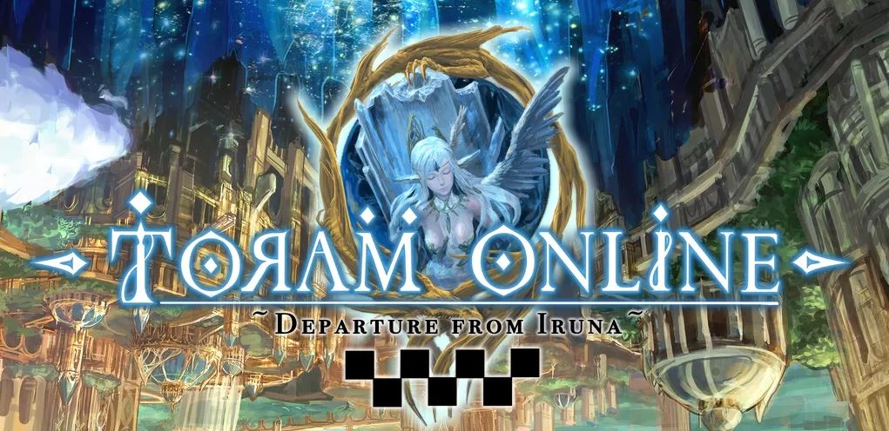

Toram Guide

1 February 2022 / Stats & Weapon Guide
How adjust stats by weapon to maximize Damage?
Stats is so important, every weapon has their own stats. so in this guide, we will cover stats allocation based on each weapon to maximize your damage + weapon tips!
Read More
9 February 2022 / Tank Guide
Tank Guide
Tank is an important role in toram online! The main role of the tanker is to protect his teammates in the party. This guide covers basic knowledge about tank roles, builds, playstyle and more!
Read More